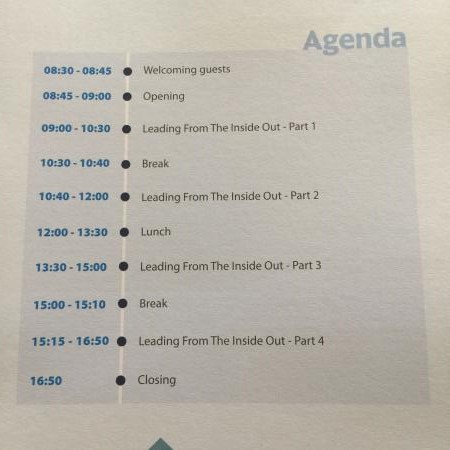

Place¶
At Pollux 4, 3rd floor, Gem Center, 8 Nguyen Binh Khiem, District 1, Ho Chi Minh City
Time¶
8:00 - 17:30, 17/07/2018
Agenda¶

About speaker¶
Mr. Andrew Bryant
Leadership counsultan, speaker and coach
Managing Directer of Self LeaderShip International
Contents¶
| English | Vietnamese |
|---|---|
| You're been Frame | Bạn đã bị đóng khung |
| Self-leadership | Lãnh đạo tự thân |
| What's the metaphorical 'oxygen' that keeps you motivated? | Hình ảnh ẩn dụ về 'oxy' giúp duy trì động lực cho bạn? |
| What's your intention? | Ý định của bạn là gì |
| Self-leadership for performance | leadership |
| leadership | Lãnh đạo tự thân hiệu quả |
| leadership | lãnh đạo |
| Framing leadership | lãnh đạo dựa vào khuôn mẫu chuẩn |
| How can you frame a Self-leadership Culture? | Làm cách nào bạn có thể hình thành văn hóa lãng đạo tự thân? |
| It's all about OWNERSHIP! | Cốt lõi là TINH THẦn LÀ CHỦ! |
| What changes need to happen for your Culture? | Cần thay đổi những gì để xây dựng nền Văn Hóa của bạn? |
| Toxic Frames | Khuôn mẫu độc hại |
| Getting a Seat at the Table | Bạn phải là người quyết định |
| Feedback | Phản hồi |
| Expectation setting | Thiết lập kỳ vọng |
| Leading from the inside-out | Lãnh đạo bắt đầu từ bản thân |
1. You're been Frame¶
From the moment of your birth, you have experienced the world through frames, frames of mind and frames of context These are some frames Purpose Culture History Nationality Paradigm Perspective Identity Belies Values Attitude
- To lead from the inside-out you will need to recognize the frame that drive your experience and action.
- Your future is in your own hands and that your own chose lead to success.
- IF go to wrong, you can take the feedback, and then adjust and retry.
2. Self-leadership¶
What is self-leadership? EN: "Self-leadership is practice of intentionally influencing your thinking, feeling and behaviours to archive your objective/s" - Bryant & Kazan 2012 VN: "Lãnh đạo tự thân là việc thực hành có chủ đích ảnh hưởng đến tư duy, cảm nhận và hành vi để đạt được mục tiêu của bạn" - Bryant & Kazan 2012
Self-leadership is about your "inner game" of performance - how you think and feel, and your "outer game" of performance - what you say and do, which leads to influence and impact.
You can't lead other unless you first lead your self!
3. What's the metaphorical 'oxygen' that keeps you motivated? (Hình ảnh ẩn dụ về 'oxy' giúp duy trì động lực cho bạn?)¶
- Activity (hành động có chủ đích)
- Ownership (được làm chủ)
- Power (quyền lực)
- Affiliation (được kết nối)
- Competence (nâng cao năng lực)
- Achievement (đạt được mục tiêu)
- Recognition (được công nhận)
- Meaning (sống có ý nghĩa)
- Something alse
Motivation in practive = Expectancy + Instrumenttality + Valunce Động lực trong thực tiễn = Kỳ vọng + Phương tiện + Hấp lực
4. What's your intention? (ý định của bạn là gì?)¶
What drive you? What's really important to you? MONEY is not the answer.
5. Self-leadership for performance (lãnh đạo tự thân hiệu quả)¶
Simply put, workplace performance is the behaviours an individual takes a goal or target. We can observe, what a person says, and how they say it, and what the person does, and how they dot it. We can then measure these observations against a stated goal or target.

6. leadership (lãnh đạo)¶
What's leadership? Leadership is the process of influencing other in a manner that enhances their contribution to the realization of group goals.(Lãnh đạo lá quá trình tạo ảnh hưởng của người khác để tạo sự đóng góp của họ vào việc thực hiện mục tiêu của đội nhóm.)
What behaviors make a bad leader? Leadership requires: Self-leadership Flexibility of leadership style Setting the vision Defining the goal and clarifying the path to it.
7. Framing leadership (lãnh đạo dựa vào khuôn mẫu chuẩn)¶

8. How can you frame a Self-leadership Culture? (làm cách nào bạn có thể hình thành văn hóa lãnh đạo tự thân?)¶
9. How do we accelerate Self-leadership? (Cách thúc đẩy lãnh đạo tự thân?)¶
Start by listing some of the behaviors that do not demonstrate self-leadership (outside the frame)
10. It's all about OWNERSHIP! (Cốt lõi là TINH THẦN LÀ CHỦ!)¶
Whose thoughts, are they? Whose thoughts, are they? Whose thoughts, are they? Whose thoughts, are they? ==> "OWNERSHIP leads to autonomy & responsibility" (Tinh thần làm chủ dẫn đên khả năng tự quản và tinh thần trách nhiệm)
11. What changes need to happen for your Culture? (Cần thay đổi những gì để xây dựng nền Văn Hóa của bạn?)¶
Self-leadership is top-down and impacts all level of the organization If self-leadership are responsible for themselves, what frame of accountability do you have? Accountable 'To' shared GOALs & agreed behavious Responsible 'for' self
12. Toxic Frames (Khuôn mẫu độc hại)¶
- Avoiding Improvement (né tránh cải tiến)
- Complaining (phàn nàn)
- Complacent (tự mãn)
- Blaming (đỗ lỗi)
- No proactive (thiếu tính chủ động)
- Self-centered (xem mình là trung tâm)
- Skeptical (nghi ngờ)
- Unresponsive (lãnh đạm)
How do we change the FRAME that's controlling game? Psychological Dependability Structure & clarity Meaning of work * Impact of work What's the FRAME that's limiting your team?
13. Getting a Seat at the Table (Bạn phải là người quyết định)¶
- Confident (có tự tin)
- Executive Presence (phong cách lãng đạo)
- Influence (tầm ảnh hưởng)
14. Feedback¶
FIF = FACT, IMPACT, FUTURE THERE IS NO FAILURE ONLY FEEDBACK FOR IMPROVEMENT
15. Expectation setting (Thiết lập kỳ vọng)¶
EXPECTATIONS X VALUES X ABILITY = PERFORMNACE
Expectation must be clarity and intentional based on frames mindset and buy-in(khả năng thuyết phục) which in-turn, frames the ability of individual or group perform.
16. Leading from the inside-out (Lãnh đạo bắt đầu từ bản thân)¶
We lead, from the inside out when we lead ourselves, then our families, our companies, and then the communnity, our country, and the world. (chúng ta lãnh đạo, phải bắt đầu từ việc lãnh đạo tự thân rồi đến gia đình, công ty và sau đó mới đến công động, quốc gia và thế giới.)
Some pictures at workshop¶
Impression¶
On time Professional organization The content is suitable with my expectation Improve my English (listening skill) -->Need to improve more Make some new friends without IT field.